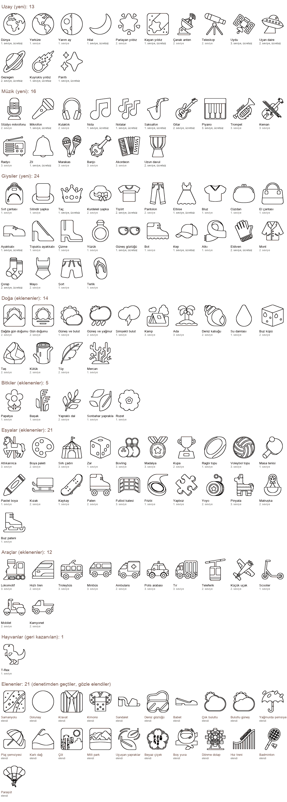

Sayfa sayısını 201'den 307'ye çıkardım. Üç yeni kategori ekledim: Uzay (13 sayfa), Müzik (16) ve Giysiler (24). Doğa 13'ten 27'ye, Bitkiler 19'dan 24'e çıktı.
Eşyalar'a 21 oyuncak ve spor sayfası, Araçlar'a 12, Hayvanlar'a 1 sayfa ekledim. Her kategoride tam 8 ücretsiz sayfa var; yeni kategorilerde bunların 5'i 1. seviye.
Sayfa dosyaları uygulamayı 0,77 MB büyüttü. flutter analyze temiz, flutter test 157 testin hepsini geçti. Mağaza metnine ve App Store Connect'e dokunmadım; sayı geçen yerlere store_listing.md'de not düştüm.
"Önce" sütunu 2.1.0 ve 2.1.1'deki sayfa sayısıdır (ad4855c). Ücretsiz sayfalar, Tam Sürüm satın alınmadan görünen sabit alt kümedir; bir kez ücretsiz olan sayfa hep ücretsiz kalır. Satın alma bugün kapalı (COBI_IAP bayrağı), bu yüzden çocuk şu an bütün sayfaları görüyor.
| Kategori | Önce | Sonra | Fark | Ücretsiz | Ücretsiz, seviyeye göre (1 / 2 / 3) |
|---|---|---|---|---|---|
| 🐾 Hayvanlar | 81 | 82 | +1 | 8 | 3 / 3 / 2 |
| 🌸 Bitkiler | 19 | 24 | +5 | 8 | 3 / 3 / 2 |
| 🚗 Araçlar | 20 | 32 | +12 | 8 | 1 / 5 / 2 |
| 🌈 Doğa | 13 | 27 | +14 | 8 | 3 / 3 / 2 |
| 🍎 Yiyecekler | 45 | 45 | 0 | 8 | 3 / 3 / 2 |
| 🧸 Eşyalar | 23 | 44 | +21 | 8 | 3 / 3 / 2 |
| 🪐 Uzay yeni | 0 | 13 | +13 | 8 | 5 / 2 / 1 |
| 🎸 Müzik yeni | 0 | 16 | +16 | 8 | 5 / 2 / 1 |
| 👕 Giysiler yeni | 0 | 24 | +24 | 8 | 5 / 3 / 0 |
| Toplam | 201 | 307 | +106 | 72 |
Yeni kategoriler ana ekranda Eşyalar'dan sonra geliyor. 3 yaşındaki çocuk kartı yerinden tanır; eski altı kartın yeri bu yüzden değişmedi.

Gezegen, hilal, Dünya, kayan yıldız, kuyruklu yıldız, parıltı, uçan daire ve uydu ücretsiz. Roket Araçlar'da, güneş ve yıldız Doğa'da yayımlandığı için burada yok (bölüm 4).
| Kod | Türkçe ad | İngilizce ad | Seviye | Ücretsiz |
|---|---|---|---|---|
1f30d | Dünya | Earth | 1 | ücretsiz |
1f30e | Yerküre | Globe | 1 | |
1f313 | Yarım ay | Half moon | 1 | |
1f319 | Hilal | Crescent moon | 1 | ücretsiz |
1f31f | Parlayan yıldız | Glowing star | 2 | |
1f320 | Kayan yıldız | Shooting star | 1 | ücretsiz |
1f4e1 | Çanak anten | Satellite dish | 2 | |
1f52d | Teleskop | Telescope | 2 | |
1f6f0 | Uydu | Satellite | 3 | ücretsiz |
1f6f8 | Uçan daire | Flying saucer | 2 | ücretsiz |
1fa90 | Gezegen | Planet | 2 | ücretsiz |
2604 | Kuyruklu yıldız | Comet | 1 | ücretsiz |
2728 | Parıltı | Sparkles | 1 | ücretsiz |
Gitar, piyano, uzun davul, saksafon, zil, mikrofon ve iki nota sayfası ücretsiz. Davul ve flüt Eşyalar'da kaldı.
| Kod | Türkçe ad | İngilizce ad | Seviye | Ücretsiz |
|---|---|---|---|---|
1f399 | Stüdyo mikrofonu | Studio microphone | 2 | |
1f3a4 | Mikrofon | Microphone | 1 | ücretsiz |
1f3a7 | Kulaklık | Headphones | 2 | |
1f3b5 | Nota | Musical note | 1 | ücretsiz |
1f3b6 | Notalar | Musical notes | 1 | ücretsiz |
1f3b7 | Saksafon | Saxophone | 1 | ücretsiz |
1f3b8 | Gitar | Guitar | 2 | ücretsiz |
1f3b9 | Piyano | Piano | 3 | ücretsiz |
1f3ba | Trompet | Trumpet | 3 | |
1f3bb | Keman | Violin | 3 | |
1f4fb | Radyo | Radio | 3 | |
1f514 | Zil | Bell | 1 | ücretsiz |
1fa87 | Marakas | Maracas | 3 | |
1fa95 | Banjo | Banjo | 3 | |
1fa97 | Akordeon | Accordion | 3 | |
1fa98 | Uzun davul | Long drum | 2 | ücretsiz |
Ücretsiz sekiz sayfa önerilen listenin aynısı: tişört, elbise, çorap, şapka (kep), eldiven, ayakkabı, taç ve güneş gözlüğü. Tişört Eşyalar'daydı ama hiç yayımlanmamıştı (bölüm 8), bu yüzden kategorisini güvenle değiştirdim.
| Kod | Türkçe ad | İngilizce ad | Seviye | Ücretsiz |
|---|---|---|---|---|
1f392 | Sırt çantası | Backpack | 1 | |
1f3a9 | Silindir şapka | Top hat | 1 | |
1f451 | Taç | Crown | 1 | ücretsiz |
1f452 | Kurdeleli şapka | Hat with a bow | 2 | |
1f455 | Tişört | T-shirt | 2 | ücretsiz |
1f456 | Pantolon | Jeans | 2 | |
1f457 | Elbise | Dress | 1 | ücretsiz |
1f45a | Bluz | Blouse | 1 | |
1f45b | Cüzdan | Purse | 1 | |
1f45c | El çantası | Handbag | 1 | |
1f45e | Ayakkabı | Shoe | 1 | ücretsiz |
1f460 | Topuklu ayakkabı | High-heeled shoe | 1 | |
1f462 | Çizme | Boot | 1 | |
1f48d | Yüzük | Ring | 1 | |
1f576 | Güneş gözlüğü | Sunglasses | 1 | ücretsiz |
1f97e | Bot | Hiking boot | 1 | |
1f9e2 | Kep | Cap | 1 | ücretsiz |
1f9e3 | Atkı | Scarf | 1 | |
1f9e4 | Eldiven | Gloves | 2 | ücretsiz |
1f9e5 | Mont | Coat | 2 | |
1f9e6 | Çorap | Socks | 2 | ücretsiz |
1fa71 | Mayo | Swimsuit | 2 | |
1fa73 | Şort | Shorts | 1 | |
1fa74 | Terlik | Flip-flop | 1 |
Bu sayfaların hiçbiri ücretsiz değil; mevcut kategorilerin ücretsiz sekizlisi aynı kaldı.
| Kod | Türkçe ad | İngilizce ad | Seviye | Ücretsiz |
|---|---|---|---|---|
1f304 | Dağda gün doğumu | Sunrise over mountains | 2 | |
1f305 | Gün doğumu | Sunrise | 2 | |
1f324 | Güneş ve bulut | Sun and cloud | 1 | |
1f326 | Güneş ve yağmur | Sun and rain | 2 | |
1f329 | Şimşekli bulut | Cloud with lightning | 1 | |
1f3d5 | Kamp | Camping | 3 | |
1f3dd | Ada | Island | 3 | |
1f41a | Deniz kabuğu | Seashell | 2 | |
1f4a7 | Su damlası | Water drop | 1 | |
1f9ca | Buz küpü | Ice cube | 2 | |
1faa8 | Taş | Rock | 2 | |
1fab5 | Kütük | Log | 2 | |
1fab6 | Tüy | Feather | 2 | |
1fab8 | Mercan | Coral | 1 |
| Kod | Türkçe ad | İngilizce ad | Seviye | Ücretsiz |
|---|---|---|---|---|
1f33c | Papatya | Daisy | 1 | |
1f33e | Başak | Sheaf of rice | 1 | |
1f33f | Yapraklı dal | Herb | 2 | |
1f342 | Sonbahar yaprakları | Fallen leaves | 1 | |
1f3f5 | Rozet | Rosette | 1 |
| Kod | Türkçe ad | İngilizce ad | Seviye | Ücretsiz |
|---|---|---|---|---|
1f3a0 | Atlıkarınca | Carousel horse | 3 | |
1f3a8 | Boya paleti | Artist palette | 2 | |
1f3aa | Sirk çadırı | Circus tent | 3 | |
1f3b2 | Zar | Dice | 1 | |
1f3b3 | Bovling | Bowling | 3 | |
1f3c5 | Madalya | Medal | 3 | |
1f3c6 | Kupa | Trophy | 2 | |
1f3c9 | Ragbi topu | Rugby ball | 1 | |
1f3d0 | Voleybol topu | Volleyball | 3 | |
1f3d3 | Masa tenisi | Ping pong | 1 | |
1f58d | Pastel boya | Crayon | 1 | |
1f6f7 | Kızak | Sled | 2 | |
1f6f9 | Kaykay | Skateboard | 1 | |
1f6fc | Paten | Roller skate | 2 | |
1f945 | Futbol kalesi | Goal | 3 | |
1f94f | Frizbi | Flying disc | 1 | |
1f9e9 | Yapboz | Puzzle piece | 1 | |
1fa80 | Yoyo | Yo-yo | 2 | |
1fa85 | Pinyata | Piñata | 3 | |
1fa86 | Matruşka | Nesting dolls | 2 | |
26f8 | Buz pateni | Ice skate | 1 |
| Kod | Türkçe ad | İngilizce ad | Seviye | Ücretsiz |
|---|---|---|---|---|
1f682 | Lokomotif | Locomotive | 3 | |
1f685 | Hızlı tren | Bullet train | 2 | |
1f68e | Troleybüs | Trolleybus | 3 | |
1f690 | Minibüs | Minibus | 3 | |
1f691 | Ambulans | Ambulance | 2 | |
1f693 | Polis arabası | Police car | 3 | |
1f69b | Tır | Articulated lorry | 3 | |
1f6a1 | Teleferik | Cable car | 2 | |
1f6e9 | Küçük uçak | Small airplane | 2 | |
1f6f4 | Scooter | Kick scooter | 1 | |
1f6f5 | Mobilet | Motor scooter | 2 | |
1f6fb | Kamyonet | Pickup truck | 2 |
| Kod | Türkçe ad | İngilizce ad | Seviye | Ücretsiz |
|---|---|---|---|---|
1f996 | T-Rex | T-Rex | 1 |
Oyuncak ve spor sayfalarını yeni kategori yerine Eşyalar'a ekledim. Eşyalar zaten oyuncak ve spor kategorisi gibi çalışıyor: balon, uçurtma, oyuncak ayı, yoyo, futbol, basketbol, tenis ve beyzbol orada.
Ayrı bir kategori bu sayfaları iki yere bölerdi. Taşımak da mümkün değil: kayıtlı resim sayfanın kimliğini (things_1f388) ve dosya yolunu (assets/pages/things/1f388.png) saklıyor. Sayfa taşınırsa 2.1.0'dan sonra boyanan resimler açılmaz.
Aynı kural Uzay'da roketi, Müzik'te davulu, Giysiler'de gözlüğü dışarıda bıraktı. Sayfaları ileride bir kimlik eşleme tablosuyla taşımak mümkün; bu iş için gerekli görmedim.
Sayfa denetimi yalnız ölçer: parmak boyu alan, taşma, mürekkep payı. 127 adayın hepsi denetimden geçti: 123 yeni konu ve hattaki hata yüzünden sayfası hiç üretilmemiş 4 eski konu. Her sayfaya tek tek baktım ve 3 yaşındaki çocuğun tanımayacağı ya da uygulamada zaten olan çizimleri eledim. Bu adaylar katalogda yok.
| Konu | Kategori | Neden |
|---|---|---|
| Samanyolu | Uzay | Çerçeveli, soyut bir gökyüzü karosu; içinde çok sayıda küçük yıldız ve nokta var. 3 yaşındaki çocuk bunu Samanyolu olarak tanımaz. |
| Dolunay | Uzay | Dönüştürücü kraterlerin açık gri tonunu çizgiye çevirmedi. Sayfa düz bir daire olarak kaldı ve ay olarak tanınmıyor. |
| Kravat | Giysiler | Kare çerçeve içinde çizgili gömlek ve kravat, 3. seviye ve 17 bölge. Küçük çocuğun giydiği bir şey değil. |
| Kimono | Giysiler | Kültüre özgü giysi, 22 bölge. Türk ve ABD'li küçük çocuk tanımaz. |
| Sandalet | Giysiler | Topuklu sandaletin çizimi belirsiz. Ayakkabı, topuklu ayakkabı, çizme, bot ve terlik zaten var. |
| Deniz gözlüğü | Giysiler | Kayak gözlüğüne benziyor, ne olduğu anlaşılmıyor. Güneş gözlüğü var. |
| Babet | Giysiler | Sayfanın %87'si boş, çizim ince ve küçük; terlikle karışıyor. |
| Çok bulutlu | Doğa | Eklenen "Güneş ve bulut" sayfasının neredeyse aynısı. |
| Bulutlu güneş | Doğa | Aynı tekrar. Bulutun çift çizgisi parmakla boyanamayacak kadar dar bir şerit de bırakıyor. |
| Yağmurda şemsiye | Doğa | Mevcut "Şemsiye" sayfasının aynısı, yalnız damlalar eklenmiş. |
| Plaj şemsiyesi | Doğa | Fluent bu konu için mevcut "Plaj ve şemsiye" sayfasındaki çizimi kullanıyor. |
| Karlı dağ | Doğa | Mevcut "Dağ" sayfasıyla aynı çizim. |
| Çöl | Doğa | Kalabalık, çerçeveli bir sahne ve 26 bölge. Kaktüs zaten Bitkiler'de. |
| Milli park | Doğa | Çerçeveli, soyut bir manzara; küçük çocuk için ne olduğu belli değil. |
| Uçuşan yapraklar | Bitkiler | Eklenen "Sonbahar yaprakları" sayfasının rüzgâr çizgili hâli. |
| Beyaz çiçek | Bitkiler | Çiçeğin içinde Japonca "aferin" yazısı var. Yazı küçük bölgeler bırakıyor ve çocuk için anlamsız. |
| Boş yuva | Bitkiler | Yukarıdan bakılan yuva tanınmıyor. Yumurtalı yuva zaten var. |
| Dönme dolap | Eşyalar | 65 bölge, sayfanın %19'u mürekkep: parmakla boyanamayacak kadar ince. |
| Hız treni | Eşyalar | İnce dikmeler dar bölgeler bırakıyor (29 bölge). |
| Badminton | Eşyalar | Raket ağı küçük karelerden oluşuyor ve sayfa mevcut "Tenis" sayfasına çok benziyor. |
| Paraşüt | Araçlar | Paraşütün altında küçük bir insan figürü var. Katalog kuralı insan çizimini dışarıda tutuyor. |
| Konular | Neden |
|---|---|
| Astronot, uzaylı, yüzlü güneş, rüzgâr yüzü | Katalog kuralı insan ve yüz çizimini dışarıda tutuyor. Uzaylı bazı çocukları korkutabilir. |
| Roket, güneş, yıldız, davul, flüt, gözlük, koşu ayakkabısı, bale ayakkabıları | Bu sayfalar Araçlar, Doğa ve Eşyalar'da yayımlandı. Kayıtlı resimler sayfanın kimliğini ve dosya yolunu sakladığı için yayımlanmış sayfa başka kategoriye taşınamaz. |
| Hortum, kasırga, ateş, yüksek gerilim işareti, yağmurlu fırtına bulutu | Korku ya da tehlike öğesi. Doğa'da tek bir şimşekli bulut yeterli. |
| Boks eldiveni, dövüş sanatları kıyafeti, bumerang, askerî miğfer | Şiddet ve silah çağrışımı. |
| Bikini, külot, ruj | Küçük çocuk uygulamasına uygun değil. |
| Tespih, çam süsü, Tanabata ağacı, sari | Dinî ya da kültüre özgü öğe. |
| Kurtarma görevlisi miğferi | Üzerinde kızıl haç amblemi var; amblemin kullanımı korunuyor. |
| Oyun kolu, joystick, bilardo topu, kristal küre, disko topu | Ekran, kumar, fal ya da gece hayatı çağrışımı. |
| Diğer ay evreleri, meridyenli küre, nota kâğıdı, posta borusu, megafon, hoparlör | Tekrar ya da küçük çocuğun tanımadığı nesne; nota kâğıdının ince porte çizgileri boyanamaz. |
| Amerikan futbolu, softbol, olta, Fuji Dağı, sis | Ragbi topu, beyzbol ve dağ sayfalarının tekrarı; oltanın kancası var; sis yalnız çizgiden oluşuyor. |
| Laboratuvar önlüğü, güvenlik yeleği, mezuniyet kepi, değerli taş, alışveriş poşetleri | Küçük çocuğun giydiği ya da tanıdığı bir şey değil; alışveriş poşeti ticari bir öğe. |
| Monoray, dağ treni, asma demiryolu, ikinci teleferik, yolcu gemisi, üç tekerlekli taksi | Mevcut sayfaların tekrarı ya da yöresel araç. |
| Arp, yapraksız ağaç, kök sebze, okul otobüsü, çöp kamyonu, tek parmaklı eldiven | Fluent UI Emoji'nin sabit commit'inde yok. |
Kral kelebeği (1facc), orka (1facd) ve deniz feneri (1f6d9) Fluent UI Emoji'nin sabit commit'inde yok. Katalogda "skip": "not in Fluent UI Emoji at the pinned commit" ile duruyorlar. Fluent bu çizimleri eklerse commit güncellenince denenebilir.
Seviyeyi sayfa denetimi hesaplar. 1. seviye en çok 4 parmak boyu alan ve 10 bölgedir. 3. seviye 8 ya da daha çok parmak boyu alan ya da 16 ya da daha çok bölgedir. Arası 2. seviyedir. Hiçbir sayfa kilitli değil; seviye yalnız sırayı belirler.
| Kategori | Önce (1 / 2 / 3) | Sonra (1 / 2 / 3) | Sonra |
|---|---|---|---|
| 🐾 Hayvanlar | 36 / 33 / 12 | 37 / 33 / 12 | |
| 🌸 Bitkiler | 10 / 3 / 6 | 14 / 4 / 6 | |
| 🚗 Araçlar | 1 / 9 / 10 | 2 / 15 / 15 | |
| 🌈 Doğa | 8 / 3 / 2 | 12 / 11 / 4 | |
| 🍎 Yiyecekler | 24 / 15 / 6 | 24 / 15 / 6 | |
| 🧸 Eşyalar | 4 / 10 / 9 | 12 / 16 / 16 | |
| 🪐 Uzay | yok | 7 / 5 / 1 | |
| 🎸 Müzik | yok | 5 / 4 / 7 | |
| 👕 Giysiler | yok | 17 / 7 / 0 | |
| Toplam | 83 / 73 / 45 | 130 / 110 / 67 |
1. seviye 2. seviye 3. seviye
Eklenen 106 sayfanın 47'si 1., 37'si 2., 22'si 3. seviye. Beş yeni sayfada yalnız bir parmak boyu alan var ve denetim bunları "zayıf" diye işaretliyor: hilal, nota, zil, su damlası ve yapboz. Bunlar tek büyük şekil; en küçük çocuk için bilerek tuttum.
| Ölçüm | Önce | Sonra | Fark |
|---|---|---|---|
Sayfa dosyaları (assets/pages) | 202 dosya, 1.568.648 bayt | 308 dosya, 2.333.680 bayt | +765.032 bayt (+0,77 MB) |
| Yeni 106 PNG, zip ile sıkıştırılmış (IPA bir zip dosyasıdır; indirme boyutu için yaklaşık değer) | +650.058 bayt (≈ +0,65 MB) | ||
Sayfa listesi kaynağı (lib/data/builtin_images.dart) | 30.953 bayt | 47.234 bayt | +16.281 bayt |
Sayfa dosyalarını ölçtüm. Derlenmiş Dart koduna etkisini ölçmedim; liste 106 sabit nesne ekliyor. Yeni sayfa başına ortalama 7,2 KB düşüyor.
Boyutu düşürmek için bir fırsat: assets/images/categories/ klasörü 1.0 sürümünün eski sayfalarını tutuyor: 76 dosya, 1.141.480 bayt. Uygulama kodu bu klasörü hiç kullanmıyor; yalnız testler cat.png dosyasına başvuruyor. pubspec.yaml'dan çıkarılırsa uygulama bu işteki büyümeden fazla, 1,14 MB küçülür. Görev tanımı bu klasörü kategori simgelerinin yeri sayıyordu, ama klasörde simge yok: simgeler emoji karakteri (Category.getDefaultCategories() içindeki icon alanı). Klasöre dokunmadım.
Üretim hattında iki hata buldum ve düzelttim. Birincisi: katalogdaki 208 konudan 7'si sessizce sayfasız kalıyordu. Betik indirme adresini kurarken a–z ve 0–9 dışındaki her harfi alt çizgiye çeviriyordu. Fluent dosya adlarında tireyi ve aksanlı harfi koruyor (Yo-yo/yo-yo_flat.svg). Yoyo, tişört ve pinyata bu yüzden hiç inmedi; T-Rex ise katalogda yanlış büyük harfle yazılmıştı (Fluent klasörü T-rex).
Betik artık dosya adını Fluent'in yazdığı gibi de deniyor ve yolu yüzde kodlamasıyla gönderiyor. Eski yazım önce deneniyor, yani daha önce inen dosyalar aynı adresten iniyor. Mevcut 201 sayfanın PNG dosyaları bu işte değişmedi (git'te fark yok). Bu düzeltmeyle yoyo ve pinyata Eşyalar'a, T-Rex Hayvanlar'a, tişört Giysiler'e girdi.
İkinci hata İngilizce adlardaydı. Betik her adı Türkçe kuralla büyük harfe çeviriyordu; "i" ile başlayan İngilizce adlar noktalı büyük İ aldı: İce cream, İce cube, İce skate, İsland. İlki 2.1.0'da da var, ama orada VoiceOver İngilizce adı hiç okumuyordu; hata, sayfa kartları uygulamanın dilini kullanmaya başlayınca görünür oldu. Artık yalnız Türkçe adlar noktalı İ alıyor (dc2dfd9). İngilizce ad kayıtlı resimlere yazılmıyor; düzeltme kayıtlı veriyi etkilemiyor.
Yeni test kataloğu ve paketi karşılaştırıyor: derlenmeyen her konu katalogda yazılı bir skip nedeni taşımalı. Bundan sonra sayfa sessizce kaybolamaz.
lib/models/category.dart: space 🪐, music 🎸, clothes 👕, sıra 8, 9 ve 10.lib/l10n/app_tr.arb, app_en.arb ve lib/l10n/drafts/ altındaki 10 taslak: Uzay, Müzik, Giysiler ve karşılıkları. Taslaklar yapay zekâ çevirisi; anadili konuşan biri henüz okumadı.fullVersionDesc artık {count} alıyor ve sayıyı paketten okuyor; "201" sabiti kalktı. Lehçede isim sayıya göre değiştiği için taslakta ICU çoğul kalıbını (sayıya göre farklı metin seçen yazım) kullandım.lib/screens/home_screen.dart: categoryName üç yeni adı tanıyor. pubspec.yaml: üç yeni sayfa klasörü.lib/screens/category_screen.dart: sayfa kartı VoiceOver'a uygulamanın dilindeki adı veriyor.tool/pages/catalog.json: 106 yeni konu, 3 skip nedeni, güncellenmiş notlar. tool/pages/build_pages.py: adres düzeltmesi ve İngilizce adların büyük harfi.tool/voice/README.md: category_space, category_music, category_clothes kayıt satırları.HIG'in Accessibility sayfasını ve App Review Guidelines'ı bugün yeniden okudum (Accessibility sayfasının son değişikliği 9 Haziran 2025). developer.apple.com/kids sayfası ebeveyn kapısı ve veri kurallarını tekrar ediyor; bu iş onlara dokunmuyor.
| Madde | Sonuç | Kanıt ve gerekçe |
|---|---|---|
| Ç1: okuma gerekmez | uyumlu | Her kategori kartında büyük bir simge var; kart yazı okunmadan seçilir. Kategori ekranında sayfalar resimle seçiliyor. |
| Konu seçimi (3 yaş) | uyumlu | 127 adayın her birine baktım. Tanınmayan, içinde yazı olan, tekrar eden ya da insan çizimi içeren 21 aday elendi (bölüm 5). |
| Dokunma hedefi | uyumlu | HIG'in varsayılan kontrol boyutu 44×44 pt, alt sınırı 28×28 pt. 375 pt genişliğindeki telefonda her kategori kartı 163,5 pt genişlikte ve ilk kartla aynı boyutta; Minik'in 64 pt sınırının da çok üstünde. Kanıt: test/app_test.dart, "on a 375 pt phone the new categories...". |
| Güvenli alanlar ve kenar boşlukları | uyumlu | Ana ekranın SafeArea ve 16 pt boşlukları değişmedi; yeni kartlar aynı ızgarada. |
| Renk kontrastı ve Dynamic Type | uyumlu | Kart adları 18 pt kalın, beyaz zeminde mevcut koyu metin rengiyle yazılıyor. En uzun yeni ad "Giysiler" (8 harf) mevcut "Yiyecekler"den (10 harf) kısa. %200'e kadar yazı büyütmede ad tek satıra sığmazsa üç noktayla kısalır. Kontrast denetimi ana ekran testinde geçiyor. |
| Reduce Motion | uyumlu | Yeni animasyon yok. |
| VoiceOver etiketleri | uyumlu (düzeltildi) | Kategori kartı kategori adını okuyor. Sayfa kartları her dilde Türkçe adı okuyordu; artık uygulamanın dilindeki adı okuyor (e708d42, test/category_screen_test.dart). İngilizce adlardaki Türkçe büyük İ de düzeldi (dc2dfd9). |
| Standart jestler | uyumlu | Yeni jest yok. Fazla kartlar dikey kaydırmayla geliyor; kaydırma tek parmakla çalışır. |
| Haptik ve ses | gerekçeli sapma | Yeni kartlar diğerleri gibi tık sesi çalar ve sesli adı dener. Hiçbir kategorinin ses kaydı henüz yok; eksik klip sessizce atlanır. Kayıt listesine üç satır ekledim (tool/voice/README.md). |
| iPad, yön ve çoklu pencere | uyumlu | Izgara genişliğe göre 2, 3 ya da 4 sütun; 320 pt Split View panelinde kart 136 pt genişlikte. Cihazda ya da simülatörde çalıştırmadım (bu işte yasaktı). |
| Kids Category 1.3 ve 5.1.4 | uyumlu | Bağlantı, reklam, analitik ya da satın alma eklemedim. İçerik insan, yüz, silah, şiddet, alkol, din ve korku öğesi içermiyor; paraşüt bu yüzden elendi. |
| App Review 2.1 (çökme, iPad) | uyumlu, cihazda doğrulanmadı | Testler 307 sayfanın her birinin PNG olarak açıldığını, bölge haritasının kurulduğunu ve taşma denetiminden geçtiğini doğruluyor. |
| App Review 2.3 (doğru meta veri) | sonraki sürümde yapılacak | Mağaza metni 2.1.0 için 201 sayfa diyor ve o sürüm için doğru. Bu içerikle çıkan sürümde açıklama, tanıtım metni ve "Notes for Review" yeni kategorileri anlatmalı. Hazır metin store_listing.md'de. |
| Kategori simgesi glifi | gerekçeli sapma | Simgeler sistem emojisi. 🪐 iOS 13.2 ile geldi, uygulamanın alt sınırı iOS 15, sorun yok. Android 10'dan eski sistem emoji yazı tipinde 🪐, Android 9'dan eskisinde mevcut 🧸 yok ve kutu olarak görünebilir; denemedim. Google Play kaydı olmadığı için şimdilik etkisi yok. |
flutter analyze: sorun yok.flutter test: 157 test geçti; 12'si bu işte eklendi.test/engine/region_builder_test.dart) 307 sayfanın her biri için bölge haritasını kurar, taşma ve parmak boyu alan denetimini yapar ve kataloğun seviyesini hesaplanan seviyeyle karşılaştırır.| Commit | Konu |
|---|---|
c8a00a2 | fix: Page builder downloads Fluent names with hyphens and accents |
ceffc57 | feat: Space, Music and Clothes categories and 106 new coloring pages |
e708d42 | fix: Page tiles are read out in the app's language |
dc2dfd9 | fix: English page names keep the English capital I |
| son commit | docs: Content expansion report, store listing notes, README and skill |
store_listing.md'de.plan/pazarlama-incelemesi-2026-11-03.html içindeki satın alma görünen adı ve açıklaması "201 sayfa" diyor. COBI_IAP açılmadan önce yeni sayıyla güncellenmeli.